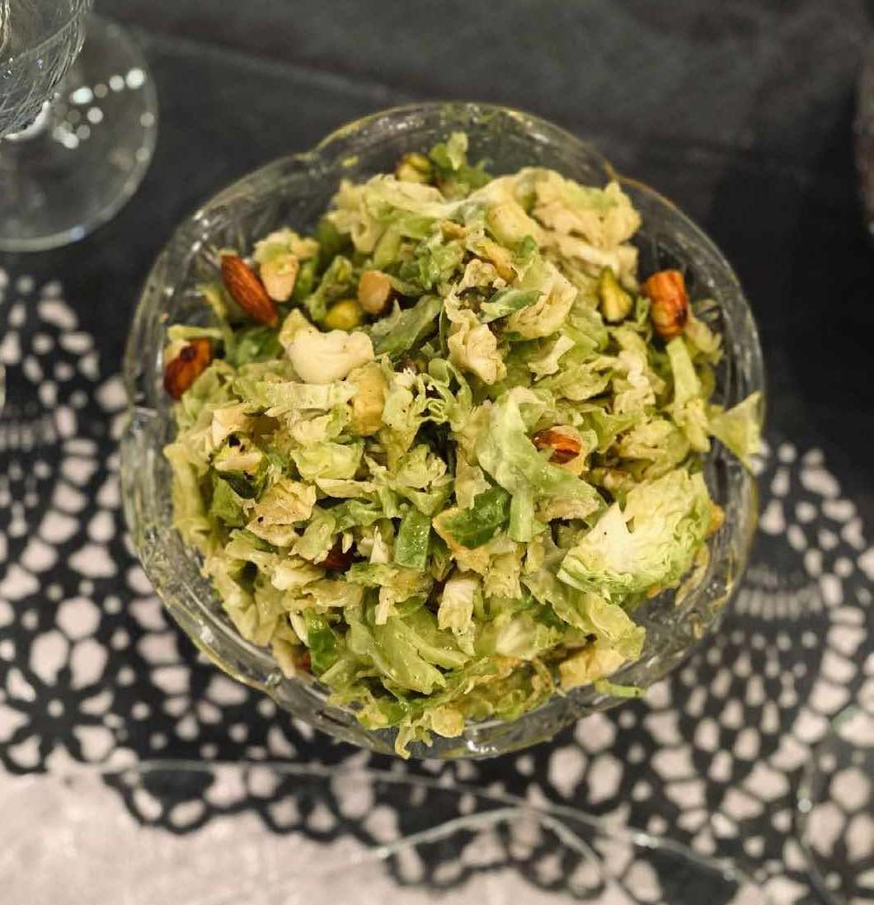

Shaved Brussels Sprout Salad
Prep time
10 minutes
Cook time
5 minutes
Total
15 minutes
- 🌿 5 cups shaved Brussels sprouts (1 - 1.5 cups per person)
- 🌰 1/4 cup almonds chopped
- 🌰 1/4 cup pistachio chopped
- 🥑 1 small - medium avocado
- 2-4 tablespoons EVOO
- 1 tablespoon white wine vinegar
- 1 clove of garlic chopped
- 1 tablespoon Dijon
Pinch of black pepper
Mix salad - dressing separately then combine when ready to eat/serve